Project 2: Fun with Filters and Frequencies
Part 1: Fun with Filters
1.1 Convolutions from Scratch
With correlation, our kernel is slid pixel by pixel over an image and we compute the sum of products between the kernel and image values. However, with convolution, although the operation is also a cross-correlation operation, our filter (the kernel) is flipped both horizontally and vertically before being slid over the image.
This is a little confusing because most computer vision libraries may use cross-correlation
in their convolution functions. However, for part 1.1, my convolution function implementations do flip the kernel
horizontally + vertically by using the np.flipud (vertical flip) and np.fliplr (horizontal
flip) from the numpy library.
Compared to the built-in convolve2d function from the scipy library, my implementation
seemed to produce very similar results. I tried using a 3x3 box filter on my input image
and then convolving with the built-in function as well as my implementation with
2 for loops. Qualitatively speaking, the 2 images look very similar and produce a blurred
output image. That being said, there was a major difference
in runtime because my manual implementation took around 2.4 seconds whereas scipy's took
around 0.025 seconds, meaning mine was around 95x slower, and also a slight diffrence in
boundary handling because my implementation padded all sides with 0, whereas scipy's
default behavior involves sliding the kernel over edges even partially, which can lead to
additional rows and columns based on my image shapes of manual convolution = (1210, 907)
and Scipy convolution = (1212, 909).
Next, I tried convolving a picture of myself (from in front of the World Trade Center in NYC!) and with a 9x9 box filter. This resulted in a blurred image, likely because the filter of all 1's sums neighboring pixels and then averages them out, leading to a smoothing effect. With the finite difference operators, I also saw a dark to light gradient in the X direction and a light to dark gradient in the Y direction, which makes sense because the finite difference operators are designed to pick up changes in intensity in the X and Y directions, respectively. To elaborate, my picture with the operator in the X direction shows some vertical edges in white, while my picture with the operator in the Y direction shows some horizontal edges.
Original Image
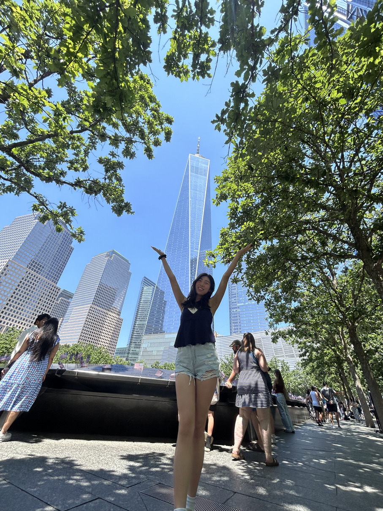
At the World Trade Center
4 For Loops Convolution
3x3 box filter + 4 for loops convolution
2 For Loops Convolution
3x3 box filter + 2 for loops convolution
Scipy Convolution
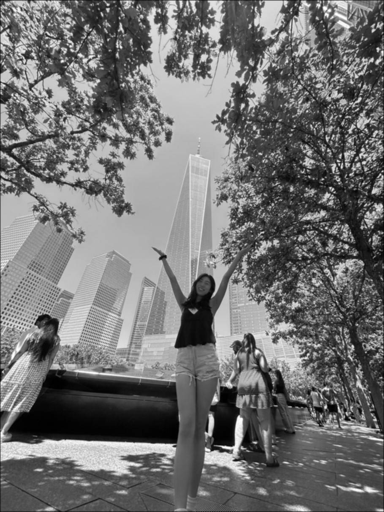
3x3 box filter + Scipy convolution
2 For Loops Convolution
9x9 box filter + 2 for loops convolution
Scipy Convolution
9x9 box filter + Scipy convolution
Gradient X
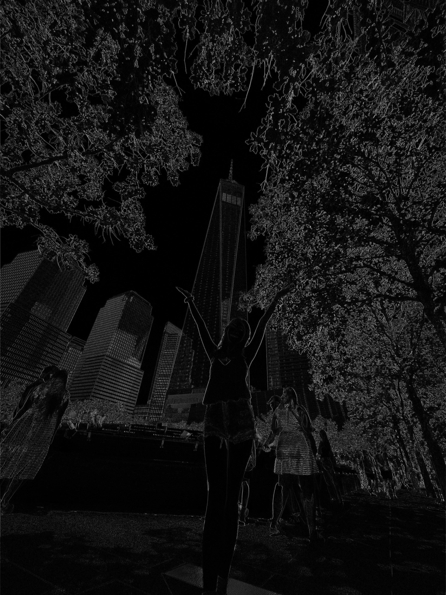
Finite difference operator in X direction
Gradient Y
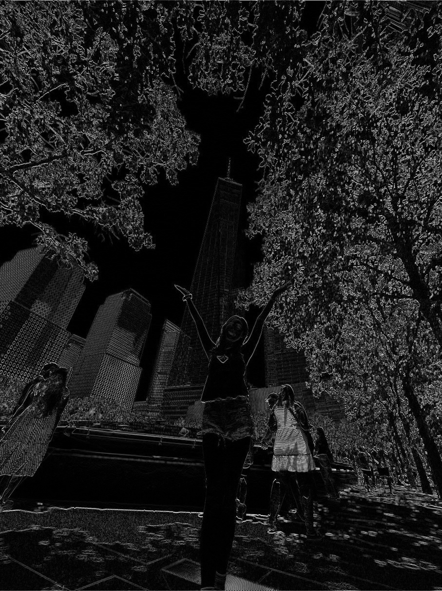
Finite difference operator in Y direction
Gradient X
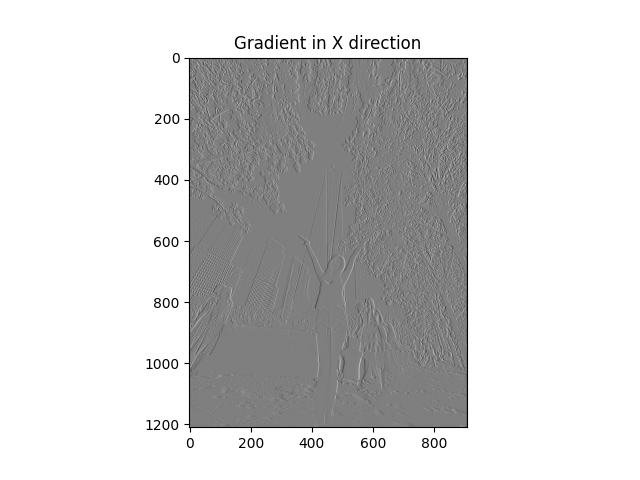
Finite difference operator in X direction
Gradient Y
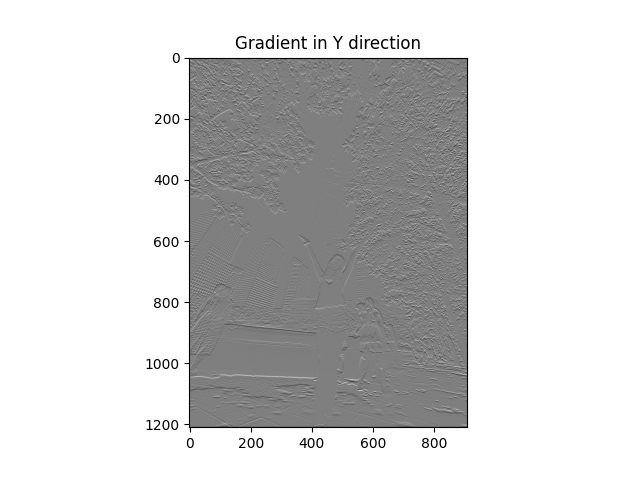
Finite difference operator in Y direction
1.2 Finite Difference Operator
For part 1.2, after calculating the gradient magnitude and binarizing the image by setting a threshold, I found that a threshold ranging from 0.05 to 0.20 showed major differences. For instance, at threshold = 0.05, I could see most of the edges outlining the buildings in the background of the image as well as some edges of the grass. However, there was also some noise in the background of the sky. At threshold = 0.10, there were still edges for buildings but less noise. At 0.20, there was little noise but buildings in the background appear imperceptible because their edges were not captured. Overall, I think a threshold of around 0.10 captures enough detail while filtering out noise.
Partial Derivative X
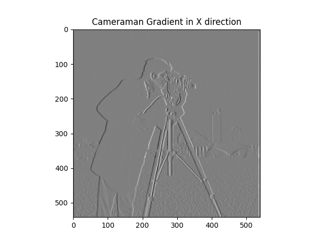
Cameraman x finite difference operator
Partial Derivative Y
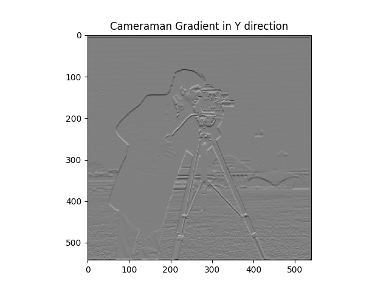
Cameraman y finite difference operator
Gradient Magnitude
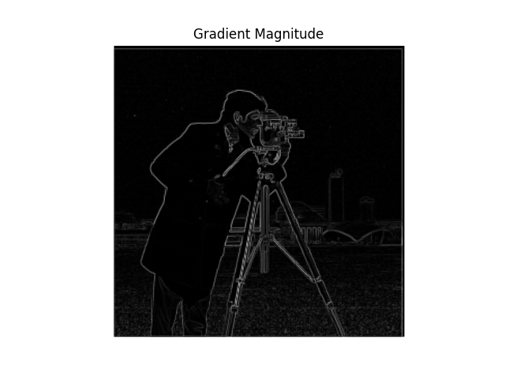
Cameraman gradient magnitude
Binarized Image (Threshold = 0.05)
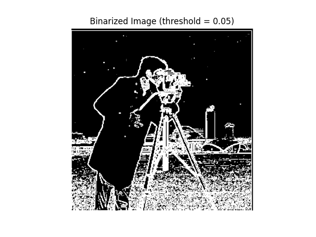
Cameraman binarized edge image threshold = 0.05
Binarized Image (Threshold = 0.10)
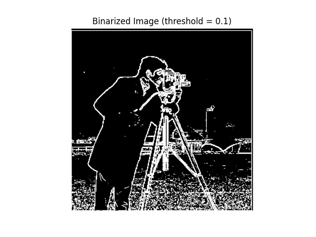
Cameraman binarized edge image threshold = 0.10
Binarized Image (Threshold = 0.20)
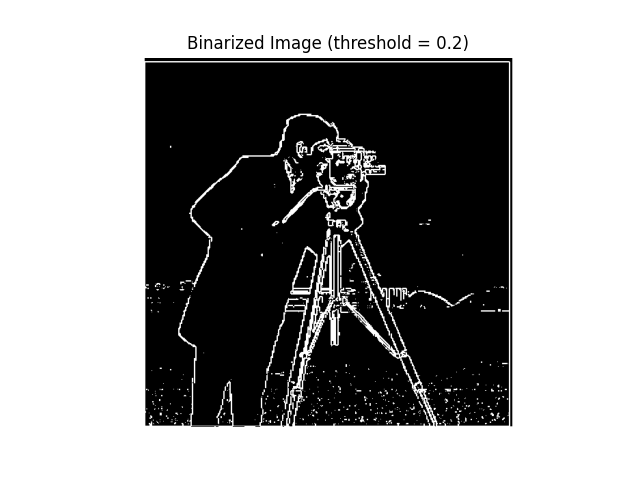
Cameraman binarized edge image threshold = 0.20
1.3 Derivative of Gaussian (DoG) Filter
By using a Gaussian blur before calculating gradient magnitude with the finite difference operators, I actually see more edges preserved than in the binarized image while noise is also still reduced (no speckles of white). This may be because the blurring reduces high frequency noise in the image while still preserving edges, which are then picked up by the finite difference operators. In contrast, the binarized image without Gaussian blur has more noise and less clear edges.
Gaussian Blur Double Convolution
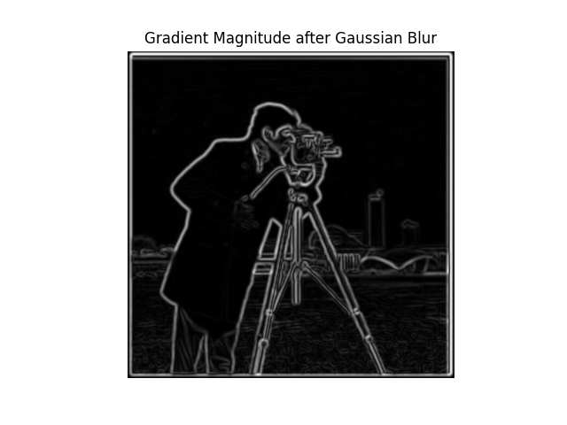
Gaussian blur and convolution
When taking the derivative of Gaussian filters and a single convolution instead of 2, I see the same thing!
Gaussian Blur Single Convolution X
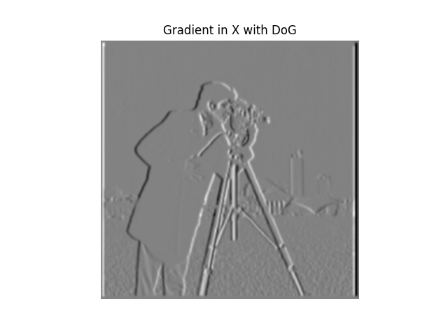
Gaussian blur with Gaussian derivatives
Gaussian Blur Single Convolution Y
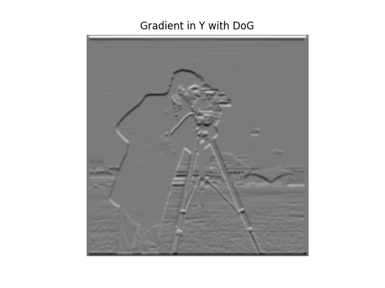
Gaussian blur with Gaussian derivative in Y
Gaussian Blur Single Convolution
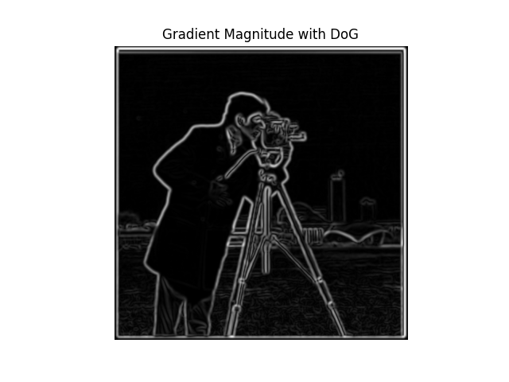
Gaussian blur with Gaussian derivatives
Part 2: Fun with Frequencies
2.1 Image "Sharpening"
For evaluation, after sharpening my image at Mauna Kea (a volcano in Big Island, Hawaii), I sharpened it again by blurring the sharpened image and then adding back high frequencies to this image. I believe the sharpening increased as the edge details of skin and hair appear more pronounced.
Original Taj
Original image of Taj
Sharpened Taj
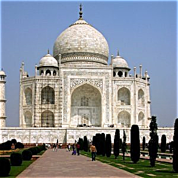
Sharpened image of Taj
Original SF
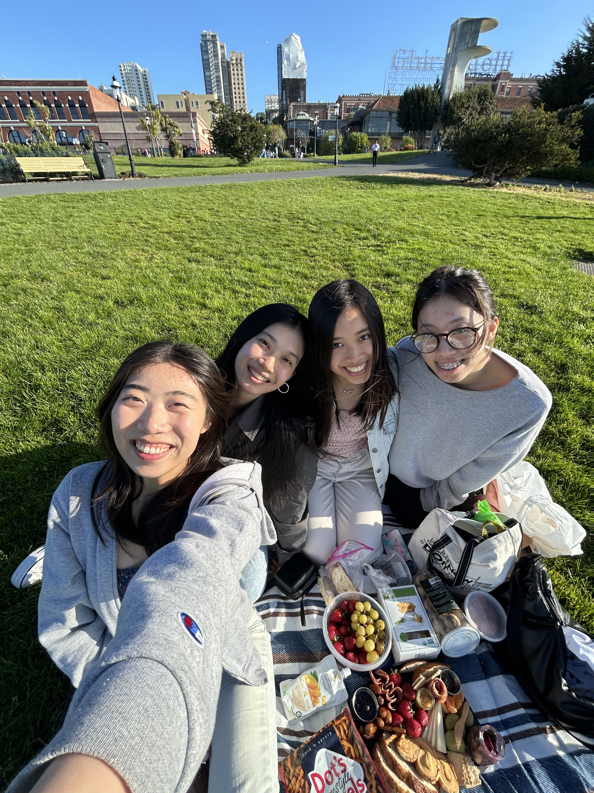
Original image of SF
Sharpened SF

Sharpened image of SF
Original Mauna Kea
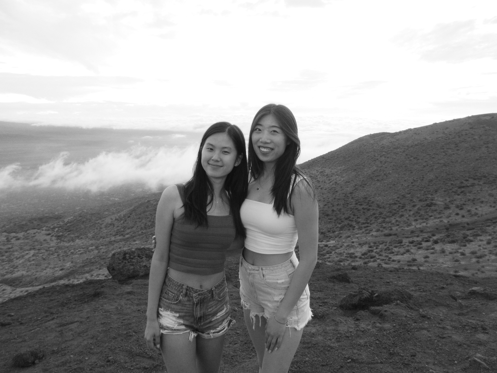
Original image of Mauna Kea
Sharpened Mauna Kea
Sharpened image of Mauna Kea
Twice-Sharpened Mauana Kea
Twice-sharpened image of Mauna Kea